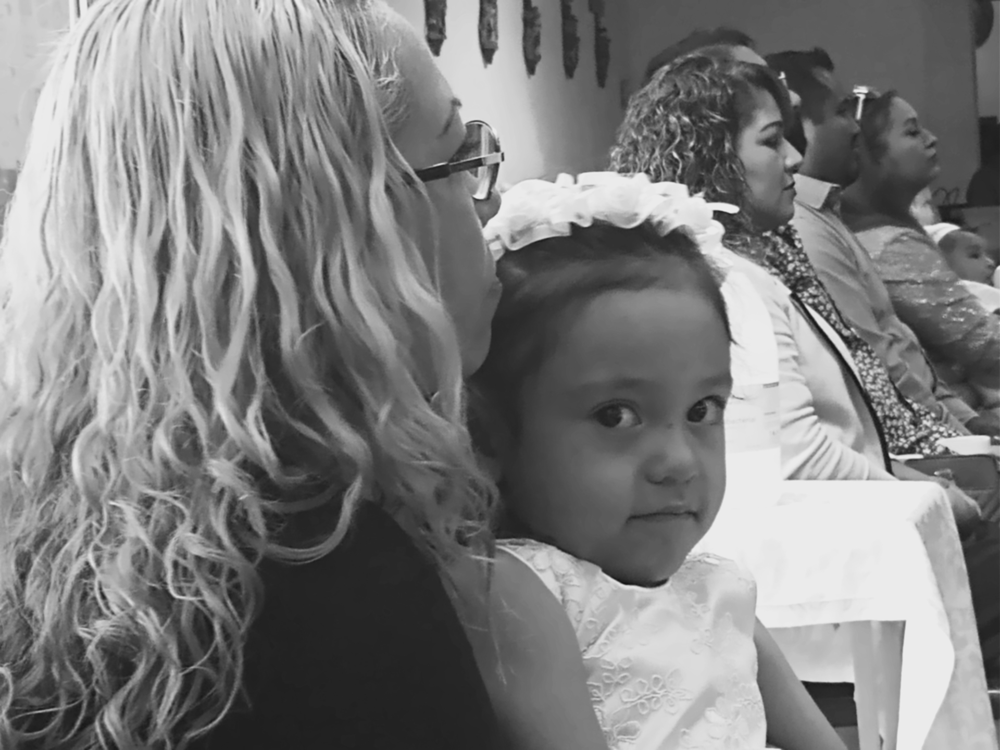

Tell me where I belong and how far I can go. (Photo by author.)
Mendoza.
Men-doh-zuh.
Maria Mendoza.
What do you picture when you read my name for the first time? What do you assume is true about my life?
Maybe you think you know the color of my hair or how tall I am. Maybe you think you know how far I went in school or the kinds of things I do—and don't do—for a living.
Maybe you think my life is pretty simple compared to yours. More limits than opportunities. More traps than triumphs.
The Maria Mendozas of this world are not someone you would ever want to trade places with. Not for a day. Not even for an hour.
Here's a thought.
You can't picture me because you don't know me. All you can picture is what someone called Maria Mendoza should look like, ought to be, based on your experience — all the Marias and Juanitas and Glorias and Doloreses and Roselias you've ever met and the places you've met them.
Maybe they cleaned your office overnight or a hotel room after you left.
Maybe they watched your kids or took your order for breakfast.
Maybe you blame them for having “too many babies”, filling up the Emergency Room when they get sick or the check out line at Costco when you're in a hurry.
Maybe you drive down deserted streets before the sun comes up trying to score with a girl who's poor.
Sure, picture me. Tell me who I am and what I'm good for. Tell me what I can and can't achieve. Tell me where I belong and how far I can go.
Tell me all those slogans and cliches about what it takes to succeed and be somebody. Tell me that they apply to those already seated at the table and not just those struggling to get in the door.
Do you know how black the sky appears at 3 AM? Or how empty it can seem at three in the afternoon?
Do you know what it's like to want something so badly that your throat feels tight and your skin crawls at the thought of not having it, because you know what it's like to go without and that's no longer an option?
Do you know what it's like to want to be somebody you've never been, because it hurts too much to be the person you are?
Do you know what it's like to be driven by fear and self-contempt because the alternative seems ridiculous and so far out of reach it might as well be on the moon? Do you know how black the sky appears at 3AM? Or how empty it can seem at three in the afternoon?
In some dark corner of my soul there's a little girl who won't go away, no matter what I call myself or do for a living. She never deserved all the things that happened to her.
I am not ashamed of her; I — I love her. But I don't know what to do with her.
I don't want to make her vanish. I want to make her safe.
Maybe then she won't have to be so angry, so quick to get even, so desperate even after all these years.
Maybe then she can sleep without being afraid and see the world through innocent eyes again.
Maybe then she can love herself.
Maybe then she will finally understand that she already is somebody, and no one can take that away.
Sinceramente,
Maria.
I want to make her safe. (Photo by author.)